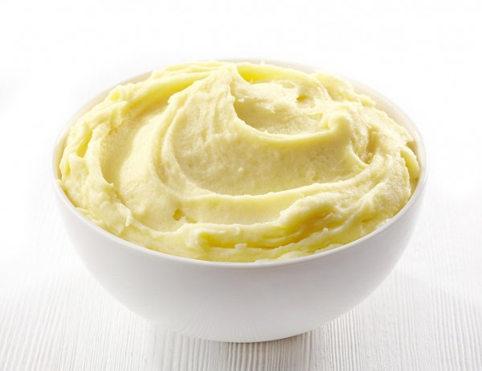

Mashed Potato
Description
Mashed potatoes are a cheap and tasty side dish or base for use in other meals. When properly prepared they can be delicious.
Ingredients
- 800
g of potatoes - 40
g of chopped butter - 1/3 cup of hot milk
- Extra butter to serve
Steps
- Peel potatoes and cut into chunks.
- Cook potatoes in a pot of boiling salted water for 20 minutes, until tender but not falling apart.
- Drain the potatoes and return the pot to low heat. Shake gently until remaining water evaporates.
- Mash the potatoes vigorously and with love.
- Add butter and hot milk to potatoes. Beat with a spoon until fluffy. Season with salt and pepper.
- Serve topped with extra butter and salt and pepper.